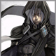

Forums galactiques > Assemblée Galactique : diplomatie officielle > Passage obligé : Présentations
Pages : 1 2 ... 26 27 28 ... 40 41
| Leid Milhanah Respect diplomatique : 620  03/04 ETU 18:39 | Score : 14 Détails Un homme soudain toussota a l'entrée de la salle réservée aux jeunes commandants.
Le visage et l'oeil vif malgré sa trentaine bien passée, la démarche se voulant assurée malgré sa grande premiére devant ce qui allait être ses collégues politiques. Prenant le micro et s'adressa rapidement à l'assistance en souriant et prenant un air poli -Bonjour à vous tous messieurs...et mesdames, je m'apelle Leid Melhanah, mon nom et mon prénom sont issus d'une vieille langue de la terre, à vous de trouver! Plus sérieusement je suis un nouveau commerçant, et je n'aspire qu'à prospérer si je ne m'abuse la galaxie semble etre secoué par une guerre non? Pourrait on, avec tout le respect que je dois aux plus anciens, m'expliquer ce qu'il se passe de facon plus détaillé et par X-com s'il vous plait? -Comme je l'ai dit plus haut, je ne recherche pas vraiment les conflits, mais plutot le profit intelligent, je ne suis pas non plus avide et ambitieux, juste faire mon chemin en toute quiétude. Mes choix politiques, sont d'abord d'assurer les interêts de mon peuple, et de la confédération que je représente. Je n'ai pas d'aversion particuliére pour quelque forme de régimes que ce soit, du moment que nous nous y retrouvons. Leid se tut, et finit par rajouter aprés un salut poli et convenu: -Bien j'espére m'entendre avec le plus de commandants possible, et pouvoir me rendre utile prochainement, n'hésitez pas à me contacter par X-com, je vous laisse! A bientot. Leid quitta la salle, pour l'heure il fallait construire et organiser sa nation. | ||
| Hebrionn Respect diplomatique : 3 06/04 ETU 19:47 | Score : 3 Détails Un homme haut en couleurs,certaines parties de ses habits était a carreaux d'autre a rayures! Il arriva devant l'assemblée...Tournoyant,dansant,voletant!Tout joyeux il s'installa devant le pupitre.
Fait une petite révérence Commandante,Commandant bonsoir! Je me présente Hebrionn,humble chef du Peuple des Arlequins!Détenteurs de la joie de vivre et des plaisirs simples! Commerçants depuis des millénaires. Tenus chatoyantes,couleurs vives,fêtes,banquets,carnavals sont de mises partout ou nous sommes! Notre vie est basée et rythmées dessus! Vous qui passerez n'hésitez pas a venir l'hospitalité vous seras offerte! Je pense avoir tout dit!Sur ceux passez une bonne soirée et que la Joie soit avec vous! Hebrionn fît une révérence et s'en alla laissant derriere lui un arc-en-ciel de couleur. | ||
| Phybrizo Respect diplomatique : 5  07/04 ETU 12:22 | Score : 5 Détails Connexion avec l’assemblée galactique confirmée
Début de la transmission dans 30 secondes Qu’est que c’est que ce cirque …. Mon commandant, il vous faut vous présenter à la grande assemblée galactique, c’est indispensable La ? Tout de suite ? Transmission dans 10 secondes Aucun moment de répit ici….. Transmission établie "Un homme vêtu d’une longue robe noire était assis sur une chaise, une tasse de café a la main." Salutations commandants, commandantes Je me nomme Phybrizo et je représente le jeune peuple pacifique d’Aldébarant. Mon histoire est un peu longue, je vous fais donc grâce de longs discours. Fin de la transmission Alors si vous souhaitez mieux me connaître… Mon commandant, vous parlez dans le vide ……. | ||
| Larry Winthorpe Respect diplomatique : 2277  11/04 ETU 13:01 | Score : 7 Détails Larry s'avança, en pleine salle des présentations, sous l'oeil interrogateur des commandants présents. Il monta à la tribune d'un air de conspirateur qui prépare une bonne blague et prit la parole.
"Bonjour à tous. Je me présente (mprfff...), je suis Larry Winthorpe, et je viens d'arriver (hihihihuhu) dans cette galaxie. J'espère entretenir de bonnes relations (houhouhou) avec chacun d'entre vous et... Hahaha, je plaisante, bien sûr, houhouhou, si vous voyiez vos têtes... ... Hum... Heu, non, c'était juste pour rappeler aux nouveaux arrivants qu'ils peuvent me contacter par MP pour obtenir une aide matérielle de ma part, ou en cas de questions diverses sur notre galaxie. Bon, heu, merci de votre attention... S.A.R.A.AAAAA. ! Ils n'ont pas l'air d'avoir trouvé ça drôle..." <Mince, encore raté...> | ||
| Mansfeld Respect diplomatique : 4380  11/04 ETU 20:15 | Score : 5 Détails Bonjour,
Je suis le commandant Yerog Mansfeld, représentant de la petite nation minière d'Alfa Deimos. Certains parmi vous pourraient me connaître : à ceux-la, avec qui j'ai partagé certaines responsabilités et certains combats, j'offre en toute humilité ma gratitude et ma reconnaissance. Vous vous reconnaitrez. A mes anciens adversaires, je témoigne de mon respect sincère. Ils se reconnaîtront également. Ma venue, ou plutôt mon retour, au sein de cette assemblée correspond à la plupart des objectifs classiques d'un commandant : Représenter ma nation. Veiller à entretenir de bonnes relations diplomatiques avec mes voisins et les autres civilisations galactiques. Y régler différents et autres problèmes, toujours par le biais de la diplomatie. La nation que je représente a également fait le choix d'adhérer à la NRE. Je serai donc également présent sur les bancs du parlement de la République pour y remplir les missions que ma nation m'a confiées. Je vous remercie pour votre attention, commandants, et vous souhaite une excellente fin de semaine. | ||
| Sergei Polat Respect diplomatique : 79  15/04 ETU 16:46 | Score : 8 Détails Un drone téléguidé arrive à l'entrée reservé aux jeunes commandants.
Le drone s'installe à la tribune devant l'etonnement général et procéde au lancement de la séquence préenregistrer qu'il devait transmettre. Une forme Holographique représentant un individu vétu d'une grande robe pourpre à capuchon, le visage en retrait voilé par ce dernier ne laissant voir qu'un cable sortant de ce qui doit lui servir de visage pour aller se perdre dans son torse. De même une lueur rouge indique la presence d'au moins un des yeux de l'individu. Commandantes, commandants. Je suis le Haut magos Sergei Polat du Méchasyndicat Rynnien. Le Mechasyndicat tiens par le présent message à faire connaitre son existence aux autres commandants. Nous sommes arrivés dans cette galaxie il y a peu de temps et avons rapidement pu établir nos laboratoires de recherches en ces lieux en englobant de nouvelles planètes de manière plus ou moins pacifique selon les cas, mais seuls compte la progression de notre savoir, pas la survie d'individu ignorant. Durant 4.5 secondes le drone se mit à transmettre des image des flottes de frégates bio-mécaniques du Méchasyndicat entrain de soumettre une population recalcitrante. Des estimations démontrent que la population de la planète a chuté de 10 000 individus à moins de 100 après la "colonisation". Durant les 3.4 secondes suivantes, des images dintégration pacifique d'une autre planète démontre au contraire l'évolution vers une meilleur situation de vie, même si les indigènes semblent devenu plus mécanisés qu'auparavant. Nous avons également du faire face aux errances de trois commandants dans notre secteur... Ces derniers ne voulaient pas comprendre la gloire dont ils bénéficieraient au sein deu Méchasyndicat. Aujourd'hui leurs mondes sont notres. Malgré ces conflits sans interets mais nécéssaire à notre survie, le Méchasyndicat assure qu'il ne cherchera pas à s'etendre par les armes, nous privilégions le commerce et les relations diplomatiques et souhaitons vivement établir une ambassade, au travers de plusieurs drones, au sein de l'assemblée. De même, le Méchasyndicat s'interesse fortement au coalition existante et apprécierait grandement de les connaitre. Dans l'espoir d'avoir des vos nouvelles, Je vous salue. | ||
| Hiro Respect diplomatique : 6  15/04 ETU 19:30 | Score : 4 Détails Je me nomme Hiro Tokugawa je viens de la partie pauvre de ma planète Osaka je suis un insoumis que Odaichi Nazaka l'empereur à marquè au fer.
Ma famille reste dans cette partie pauvre pendant que moi j'essaie de les sortir de là en devenant samouraï. Ce référer à la taverne pour plus d'information | ||
| Tsuul Respect diplomatique : 523  15/04 ETU 19:33 | Score : 0 Détails Bienvenue Commandant!
| ||
| Hiro Respect diplomatique : 6 15/04 ETU 19:42 | Score : 0 Détails Merci commandant Tsuul.
| ||
| Dyv Respect diplomatique : 4  16/04 ETU 08:33 | Score : 0 Détails Bonjour,
Je suis Dyv, politicien et dirigeant de ma nation de Sulp. Parlons de ma nation, nous sommes des commerçants à la recherche de fric pour nous acheter des armes que nous revendrons au plus offrant(quand on sera déjà bien développé ^^) | ||
| Brise Respect diplomatique : 32  16/04 ETU 16:13 | Score : 14 Détails Une jeune femme, arborant les vingt-cinq ans venait de faire ses premiers pas au sein de l'assemblée. Elle avait de longs cheveux de couleur roux, un front moyennement large. Ses yeux couleur noisette et son nez fin lui donnaient une impression de fille pure et chaste, innocente et n'ayant jamais goûté aux plaisirs de la vie. Elle portait une robe bleu océan en ourlé, s'arrêtant au niveau de ses épaules.
Elle alla prendre sa place sur une chaise, dans un coin plutôt calme de l'assemblée, sa timidité l'empêchait de se présenter convenablement. Elle ne faisait pour ainsi dire jamais le premier pas, sa timidité était son pire défaut, mais c'est ce qui faisait son charme. On disait d'elle que la mer l'enviait, que la montagne se courbait pour la laisser passer. Elle vous amènerait au loin avec une douceur sans fin, pour arriver enfin à ces rêves d'enfants qui n'ont pas de limites comme maintenant. Une fleur de lotus, douce et belle, mais fanant si facilement. | ||
| Corto Zulius Respect diplomatique : 33  17/04 ETU 16:50 | Score : 5 Détails *Un homme de grande taille entre dans la salle et s'arrête au centre, De longs cheveux blonds clairs encadrent un visage assez jeune, il dévisage les membres de l’assemblée d'un regard calme, néanmoins on peut voir à la crispation de ces mâchoires qu’il a du mal a dominer sa nervosité. Il est vétu d’un uniforme vert sombre rehaussé de galons d’argent, a son flanc pend une antique épée parfaitement entretenue. Il s’exprime d’une voix forte *
Salut a vous commandants ! Je me nomme Corto Zulius, je suis le représentant et la voie de mon peuple. Je viens me présenter à vous en tant qu’humble dirigeant de cette nation. Je n’ai aucune intention belliqueuse et je n’ai pour objectif actuel que l’exploration d’un univers immense et regorgeant de nombreux mystères. Je suis aussi pret a examiner toutes proposition venant de la part de n’importe quel commandant pour entamer des accords qui pourraient être bénéfique a nos nations respectives. *Sur ce Corto Zulius hoche la tête et se dirige vers une place libre dans les gradins de l'assemblée* | ||
| Hiro Respect diplomatique : 6 17/04 ETU 17:01 | Score : 2 Détails Excuse moi si mon regard ne s'arrète pas sur toi...
Je te souhaite la bienvenue dans cette galaxie. | ||
| néopole Respect diplomatique : 9  17/04 ETU 17:24 | Score : 6 Détails Un droide arriva, il avait le pas lourd, la tête haute.
-Bon... Bonjour, je... Je m'appel Néopole, je... Je suis un ancien droide de combat reconverti. Un... un humain m'a modifié et m'a appris les sentiments, l'amour. Com... Comme ma description le dit, je suis ici pour la paix, mais je... je n'ésiterai pas à tuer mes ennemis. Mer...Merci. Puis le droide reparti d'une démarche plus légère, il avait dit ce qu'il avait à dire. | ||
| Tietz Respect diplomatique : 5 18/04 ETU 14:14 | Score : 5 Détails Un grésillement, quelques mots séparés de brèves coupures, puis une silhouette de dessine.
Une voix métallique et platement monocorde s'élève : "Début de la transmission, Amiral." L'amiral Tietz, avec ses traits sombres et durs, dans sa longue toge brune, derrière sa tribune, lève la main pour appeler au silence quelques instants. Après un court moment de mutisme général, sa voix assurée s'élève dans l'Assemblée, au travers de l'image holographique. "Commandantes et commandants, Il y a peu, un cataclysme gigantesque a engendré un feu Hyperatomique dans notre système solaire. Nos flottes ont été réduites à l'état de poussière, nos hangars se sont effondrés et toutes nos chances de communication avec l'extérieur ont été réduites à néant. Nous avons également perdu le contrôle de plusieurs de nos planètes, et l'ordre a été fortement perturbé. A l'heure actuelle, nous n'avons plus accès à la technologie d'hyperfusion, aussi, nous n'avons pu envoyer physiquement une délégation à l'Assemblée et c'est pourquoi je m'adresse à vous par hologramme. Cette catastrophe sans précédents a enterré une ère aujourd'hui révolue. Cependant, du chaos le plus total a jailli l'ordre. Trois amiraux ont fait preuve du plus grand courage, et se sont insurrectionnés dans le palais impérial dans une ultime tentative de rétablir la stabilité politique de notre chère nation. J'ai fait partie de ceux-là, et aujourd'hui, je vous annonce que, sur Ïanus Sanctum, toutes nos forces sont affectés à la reconstruction de l'Empire. Dans le but de parvenir à un épanouissement de l'Empire actif, rapide, et dans tous les domaines, nous déclarons en ce jour et devant vous, notre désir d'établir des relations diplomatiques et commerciales cordiales, profitables en tous sens. Nous annonçons notre volonté de nous extirper de l'autarcie dans laquelle nous avons été plongés de force ! Nous proclamons qu'à nouveau, les forces de l'Empire s'élèvent en coeur pour créer une entité puissante et reconnue, une entité unie et soudée ! Je proclame en ce jour qu'une nouvelle ère débute pour nous, une ère de prospérité, une ère de progrès, une ère d'avancées majeures ! Commandantes, commandants, amiraux, généraux, empereur, dirigeants de toutes sortes ! Je vous invite à prendre contact avec nous pour établir les relations décrites précédemment." Le grésillement électrique du transmetteur intergalactique se fait à nouveau entendre, l'image se brouille, la communication se coupe alors que l'Amiral Tietz disparaît. | ||
| Hagal Thorn Respect diplomatique : 118  18/04 ETU 14:38 | Score : 3 Détails Hagal était seul, il avait perdu tous les autres il marchait dans ce labyrinthe en mouvement sans trop savoir où aller. Soudain, une cellule du labyrinte se mit en mouvement, il s'arrêta net, de peur d'être fauché, lorsqu'elle s'arrêta, Hagal découvrit ce qu'il cherchait, la sortie de cet enfer, il espérait que ses amis allaient bien, il avait abandonné l'espoir de trouver la pierre et les avait laissé continuer sans lui.
Il se mit à courrir comme jamais il n'avait courrut, soudain, il entendit un bruit de pierre en mouvement, il s'arrêta et regarda tout autour de lui mais ne vit rien, puis le bruit recommença, cette fois-ci, il était plus proche, il regarda vers un desmurs et put apercevoir une pierre qui en tombait, il s'approcha avec prudence et commençait à se baisser lorsqu'une espèce de barre sortit du trou laissé par la pierre, elle traversa le couloir dans toute la largeur, n'épargnant pas Hagal qui se trouvait sur son chemin. Lorsqu'elle se retira, Hagal s'écroula de tout son long sur le sol glacial du labyrinthe, il avait un trou béant dans le ventre et du sang sortait de sa bouche. Il avait le regard vide, ses cheuveux, comme tout le reste de son corps gisait dans cette marre de sang. Un silence assourdissant s'installa. La cellule du labyrinthe conduisant vers la sortie se remit en mouvement plongeant le labyrinthe dans la pénombre. Hagal eut juste le temps de se téléporter à l'extérieure du labyrinthe, puis jusqu'à l'assemblée. Là il s'affala tenta de lancer un regard à l'assemblée, il ne vit que trois commandants qui le regardaient, incrédules, son corps se convulsait, un brouhaha s'installa, couvrant les gémissement d'Hagal. Puis, son corps se détendit, les convulsions stoppèrent, il pousssa un long râle déchirant, le silence se fit maître, tous regardaient Hagal, orrifiés. Là, dans l'obscurité de l'assemblée, gisait l'archange Hagal Thorn 1er, mort, pour la seconde et dernière fois. | ||
| tagazock Respect diplomatique : 7 19/04 ETU 13:23 | Score : 7 Détails "Tel le chien intersidéral !!, tel la Béte de scéne !!, que dis je!? , le show man par excellence , je me présente, je sui moi le grand moi même, fils caché du grand Gouki, taga.. taga.. Tagazock !!
Tagazock a vous commandants, grand et petits, mauvais et méchants, franc et hypocrytes, radin et genereux, bref, Tagazock a vous tous,et que le grand Gouki soit avec vous. ...euh .. au fait,le possesseur du vaisseau immatriculé '1447Puyt//*9' à une légére erraflure sur l'aile droite.. j'ai pas vraiment l'habitude de conduire et euh en fait .. mais c'est vraiment trés léger hein .. voila voila .. hum " *se retournant tel une autruche aux yeux globuleux, il reprit une marche rapide vers son humble vaisseau .. * | ||
| Metamorphosis Respect diplomatique : 658  19/04 ETU 14:52  | Score : 16 Détails Une vieille femme au dos voûté se leva du dernier rang où personne ne l'avait aperçue. Appuyée sur un bâton noueux, elle avança doucement vers la tribune et monta au pupitre... Elle avait une voix étonnament sonore et claire qui envoutait l'assistance.
Je suis Métamorphis et je vous salue ! Je viens de Kharma où tout a été détruit et où je me suis retrouvée seule avec quelques âmes, coupée de tout pendant très longtemps. Aujourd'hui, je ne suis pas devant vous physiquement mais, très bientôt, je l'espère, je viendrai confirmer en chair et en os mon engagement ainsi que celui de mon peuple auprès de l'Assemblée Galactique. Quelques quolibets partirent de l'assistance. Métamorphosis releva la tête et se redressa avec une vigueur insoupçonnée. Ses yeux étonnament limpides, d'un vert étincelant toisa l'assistance... Les murmures s'éteignirent jusqu'au silence complet, légèrement angoissé des participants. D'aucuns pensent peut-être que je suis une vieille femme qui ne peut plus rien leur apporter ? Ceux qui se fient aux apparences sont dans l'erreur, mais je ne m'abaisserai pas à les détromper. Mon empire n'est pas mendiant, seulement malmené par une succession de cataclysmes que je ne souhaite à personne. Mon peuple, bien que décimé, est courageux et valeureux. Nos alliances seront riches et honnêtes. Elle s'interrompit dans le plus grand des silences et son image s'effaça doucement dans un doux bruissement. LOngtemps, personne ne bougea dans l'assistance... | ||
| Demettra Respect diplomatique : 348  27/04 ETU 12:52 | Score : 2 Détails Voila une nouvelle comandante que je vous présente.
| ||
| mistral Respect diplomatique : 6  27/04 ETU 12:53 | Score : 6 Détails Doucement infiltrée dans la salle, un chat tigré s'avança d'un pas leger et sauta sur l'estrade, en douceur, il monta sur le fauteuil central et commença à s'y faire les griffes...
Un raclement de gorge retentit dans le silence de la salle. Le chat tourna rapidement la tete de gauche à droite et vit qu'il n'était pas seul. Il avait été pris en flagrant déli de massacre des biens publics. Une veritable armée de commandants se tenait dans l'ombre de la pièce et attendaient quelque chose... Avec une mimique génée, le chat se métamorphosa en humaine. C'était une petitte fille d'environ 10 ans qui se tenait maintenant accroupie au millieu de l'estrade et regardait l'assemblée avec un regard malicieux. Quand elle commança à parler de sa petite voix claire se fut avec tres peu d'imagination: "Mia ahouw...Heu, bonjour tout le monde... Bon bah je crois que je vais devoir me présenter... Je m'appelle Mistral et j'ai 7 ans Miah...Heu voila" Elle gratifia l'assemblé dun sourire felin pendant qu' elle amorçais la métamorphose inverse et repartit en trotinant la queue en l'air. |
Pages : 1 2 ... 26 27 28 ... 40 41
Forums galactiques > Assemblée Galactique : diplomatie officielle > Passage obligé : Présentations